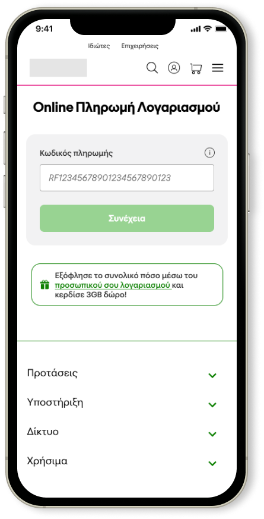
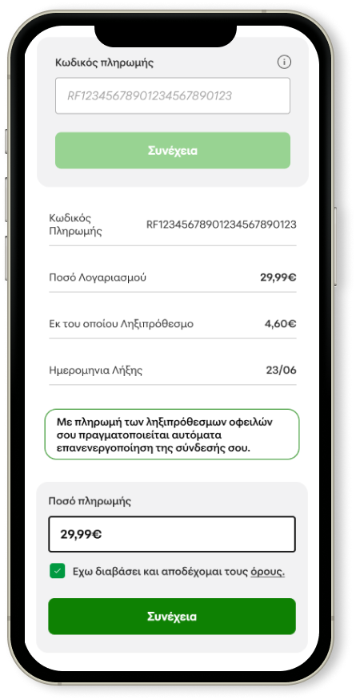
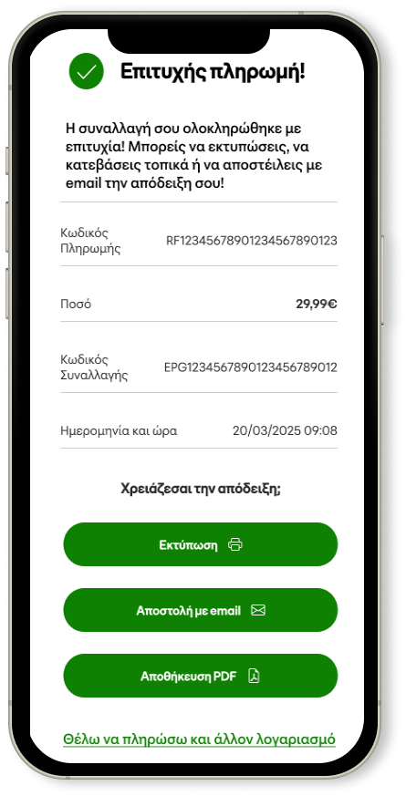

Starting with people
User was always my first priority. Long before I moved into digital design, I was creating retail store layouts. I studied how people moved through space, how visual merchandising guided their eyes, and how every small element could change their decisions. That early work taught me a lesson that stays with me today: design only works if it meets real needs.
Through my practice on the chatbot department, I had the chance to sit at the front line of customer pain points. Telco products are often complex, and customers came to us with fragmented, sometimes conflicting needs. I learned that solving these issues required more than sleek flows — it required empathy, listening, and constant iteration.
Today, in my current role, I dedicate a large part of my work on monitoring and analyzing customer insights. Using tools like Medallia surveys, Google Analytics, Search queries, Hotjar, and others, I constantly collect data. I handle and present the data in order to make strategic decisions based on customers’ needs and promote customer-first design. I’m also responsible for tracking NPS and CX scores, ensuring we continuously push for better customer satisfaction.
How do I monitor Customer Insights?
MedalliaNPS, CX
GA4Behavior & Funnels
HotjarNPS, CX
SearchOn‑site queries
PythonData handling
Power BIVisualization
CX MetricsNPS, CSAT
DashboardsDecision support
Case study — Bill Payment Redesign
One of the clearest examples of insights shaping design was our bill payment page, the most visited self‑care page on the website, with an average of 250,000 customers per month.
The challenge
Multiple entry points: physical bill (manual RF code), SMS‑to‑web, email links, and app redirects. Transition points often caused friction: codes were lost or mistyped, journeys disrupted. Legacy flow required 4 steps to complete.
The redesign
Collecting data and insights from users across the journey. Used UTMs to pre‑fill RF codes automatically, even for anonymous users coming from SMS or email. Reduced steps, making the journey seamless across channels.
The impact
+5 NPS within the first two weeks. Customers completed payments faster, with less effort.



This project reminded me that even the most “basic” flows can be the biggest drivers of satisfaction when designed around real needs.